和谐化与实时亮度
对仿真链路中的外部资产进行视觉和谐化与实时动态亮度调整，让插入资产与原场景的光照、色调保持一致。
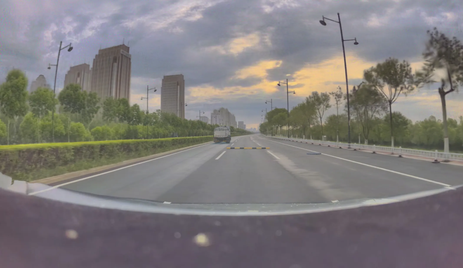
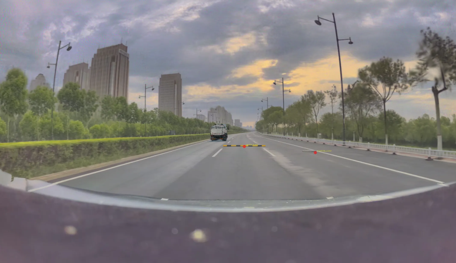
2027 届 · 算法岗
3D VISION · SIMULATION · GENERATION
ZONGJIN HE
把 3D 视觉研究，推进到仿真数据链路。
地平线仿真场景 · 展示数据已获公司同意
RESEARCH → SYSTEM → PRODUCTION
两篇研究分别解决组合三维场景生成与 3D 资产放置问题；实习则把场景重建、数据合成、渲染和下游评测接成可复用链路。
HORIZON ROBOTICS · 2026.02–2026.07
围绕三维场景重建与数据合成，负责外部资产插入、视觉和谐化、渲染质量优化、天气仿真及前馈重建预研。
对仿真链路中的外部资产进行视觉和谐化与实时动态亮度调整，让插入资产与原场景的光照、色调保持一致。
以 VLM + 规则引导实现通用资产批量插入，并通过 Delta-blend 与阴影设计提升数据合成的渲染质量。
完成路面积雪生成、路沿积雪仿真、天空层替换与天气变换，扩展自动驾驶长尾场景数据。
VISUAL HARMONIZATION
同一段连续帧对比：和谐化与亮度变换降低了外部资产在色调、曝光和边缘融合上的突兀感。
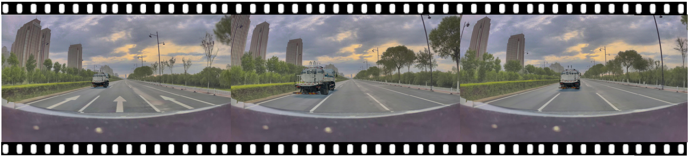
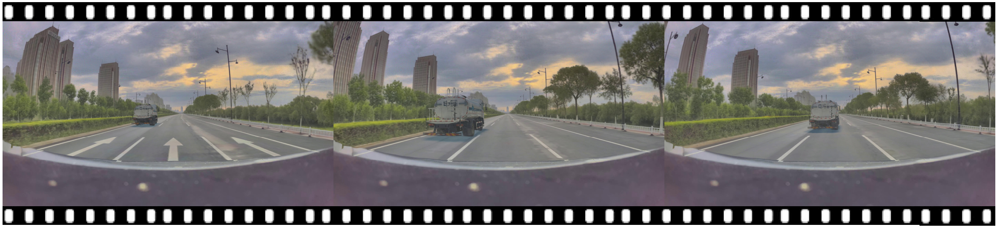
PRODUCTION TASK · 2026.06–2026.07
在泊车场景的车位入口或侧边虚拟插入路沿（挡车器）3DGS 资产，融合进真实相机图像，并生成与人工标注同 schema 的 Curb GT JSON 供下游感知评测。
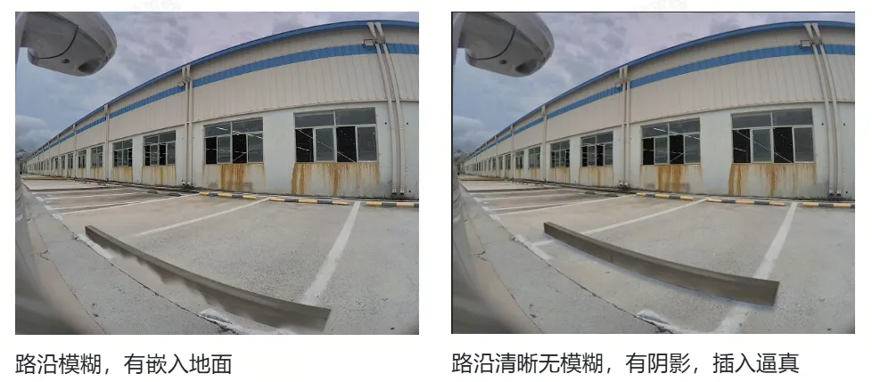
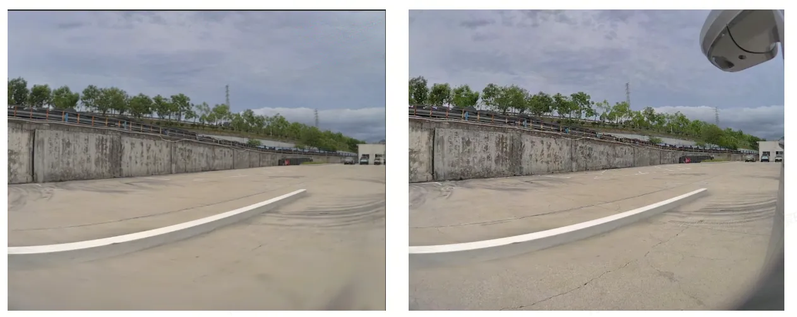
提升泊车场景中路沿等目标的感知识别效果；静态资产插入链路渲染质量提升且可复用。
INTERNSHIP R&D · FEEDFORWARD RECONSTRUCTION
作为实习预研工作，复现 D4RT（CVPR 2026 Best Paper），并在自动驾驶静态场景上完成数据处理、训练、推理与验证。
| 指标 | Base | 微调后 | 相对提升 |
|---|---|---|---|
| Local Depth AbsRel | 0.15338 | 0.09545 | 37.77% |
| Local XYZ EPE | 9.3465 | 4.2708 | 54.31% |
| Ref XYZ EPE | 13.8147 | 5.0129 | 63.71% |
训练配置：DDAD 150 train / 50 val 场景，4 × RTX 4090（48GB），2 万步，约 10 小时。展示结果均来自公开数据集，不含公司内部数据。
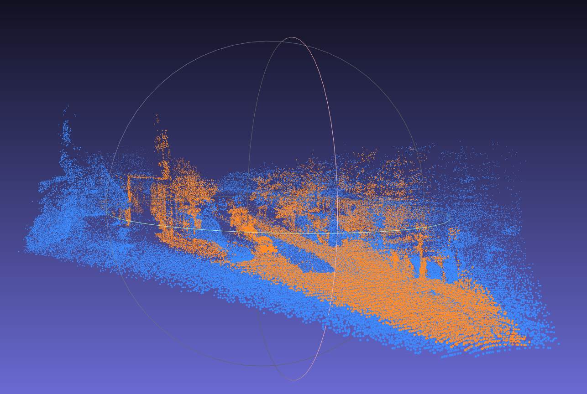
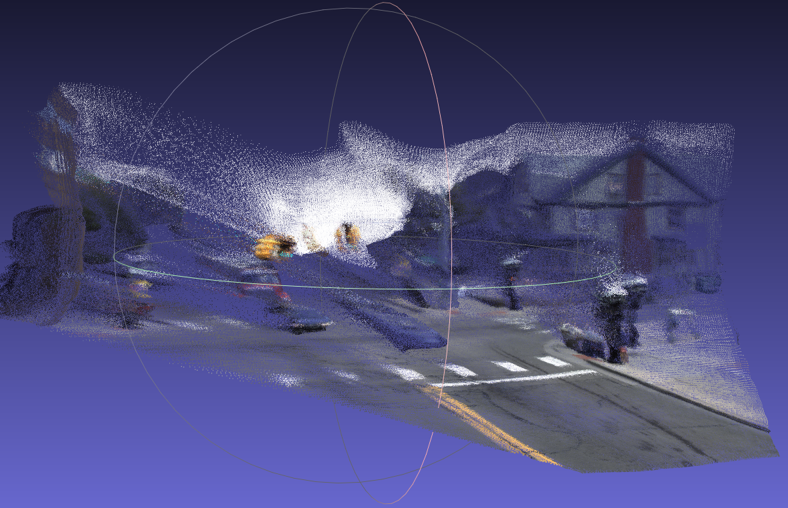
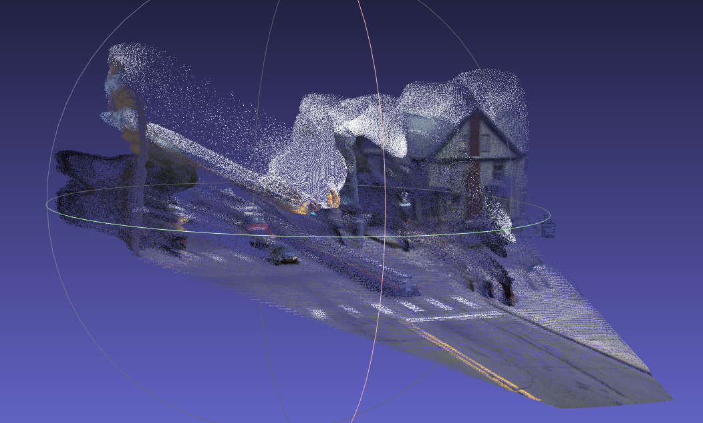
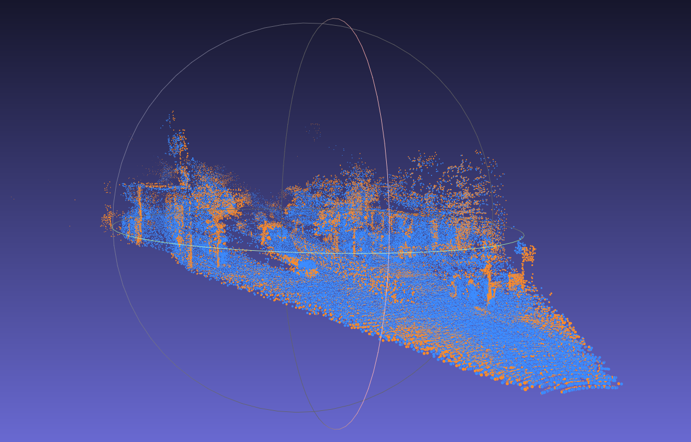
ACADEMIC RESEARCH
LayoutDreamer 生成物理合理、可编辑的组合场景；Loci-GS 在既有 3DGS 场景中自动部署外部资产，并把核心模块带入仿真系统。
面向具身智能仿真与数字孪生，根据复杂文本批量生成物理合理、资产可编辑的组合 3D 场景。
成果：通过文本完成组合场景生成与扩展，在 T3Bench 上达到 SOTA；论文被 Pattern Recognition 录用。
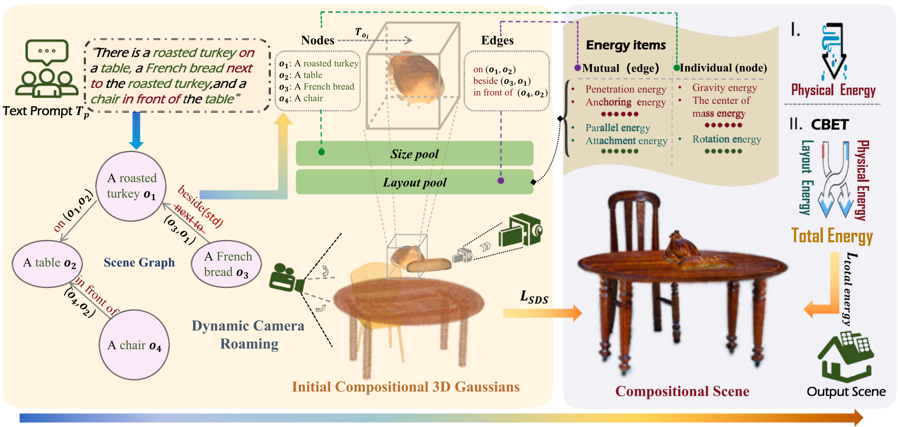
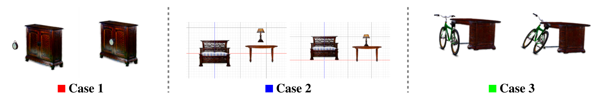
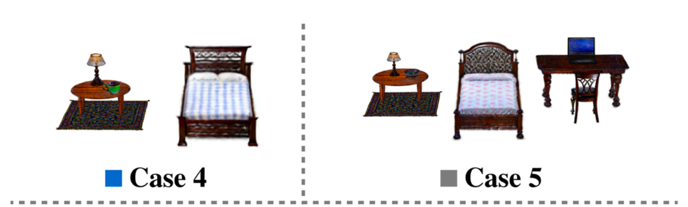
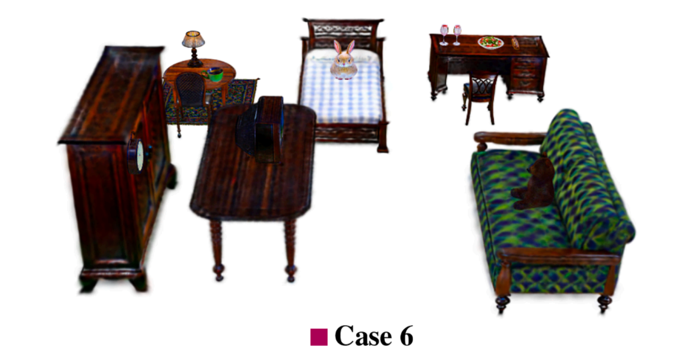
在非解耦 3DGS 场景中，根据文本自动插入外部资产，实现仿真场景的低成本扩充与数据合成。
成果：以文本 + VLM 实现无标注资产放置，核心模块已在地平线仿真系统落地；论文被 ACM MM 2026 接收。
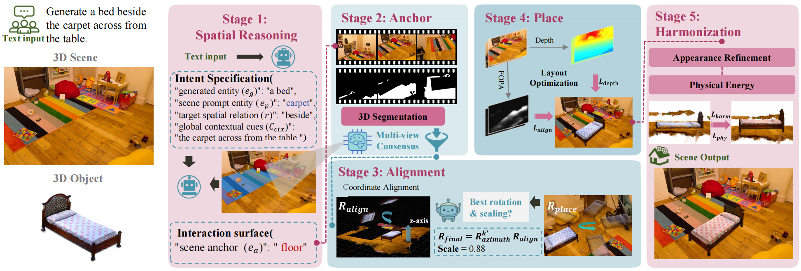
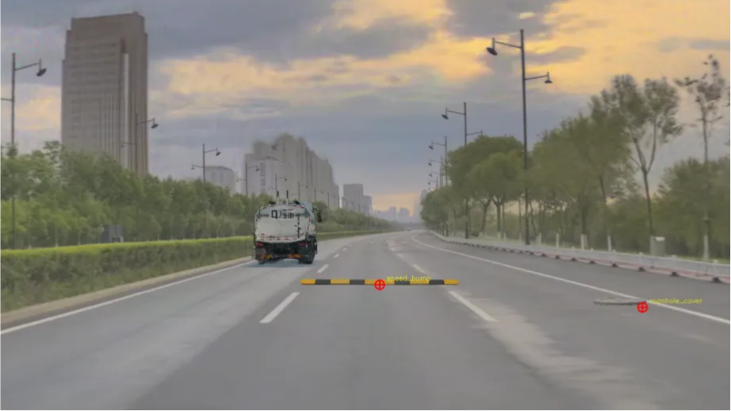
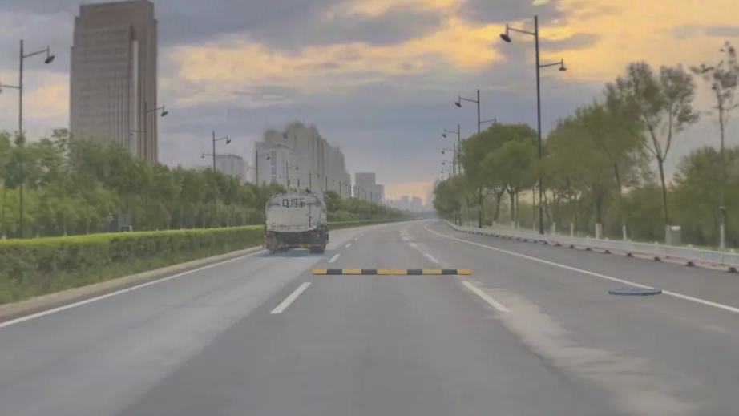